ID: automobile-train-n04037443_664/felzenszwalb_masked_softmax
Accuracy: 0.687 -> 0.69
Mean Recall: 0.687 -> 0.69
Mean Precision: 0.692 -> 0.69
Mean F1: 0.684 -> 0.686
Target Recall: 0.769 -> 0.784
Target Precision: 0.74 -> 0.71
Target F1: 0.754 -> 0.746
Orig Pred Recall: 0.877 -> 0.838
Orig Pred Precision: 0.68 -> 0.769
Orig Pred F1: 0.766 -> 0.802
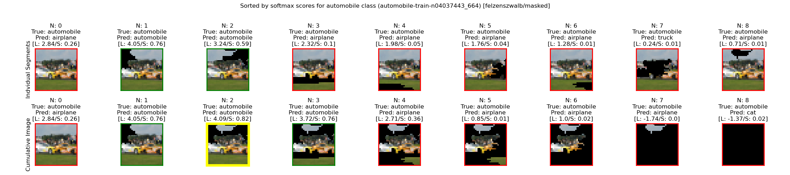 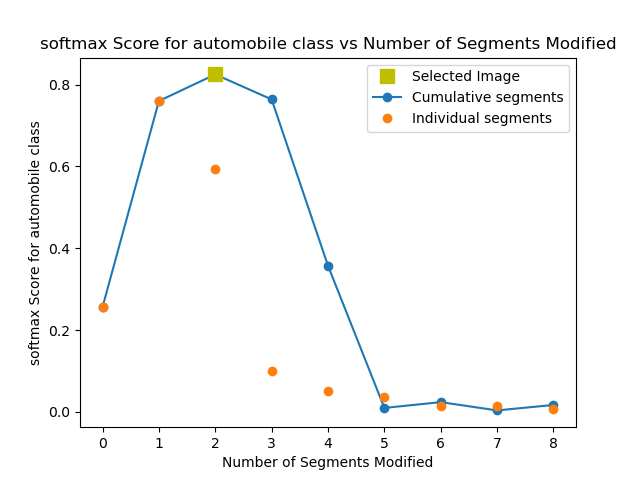 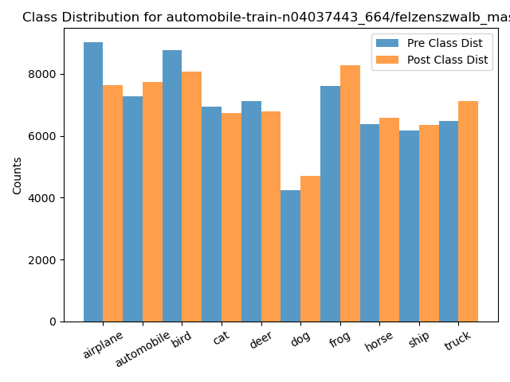ID: automobile-train-n04037443_14370/felzenszwalb_masked_softmax
Accuracy: 0.687 -> 0.689
Mean Recall: 0.687 -> 0.689
Mean Precision: 0.692 -> 0.69
Mean F1: 0.684 -> 0.685
Target Recall: 0.769 -> 0.799
Target Precision: 0.74 -> 0.697
Target F1: 0.754 -> 0.744
Orig Pred Recall: 0.877 -> 0.851
Orig Pred Precision: 0.68 -> 0.74
Orig Pred F1: 0.766 -> 0.792
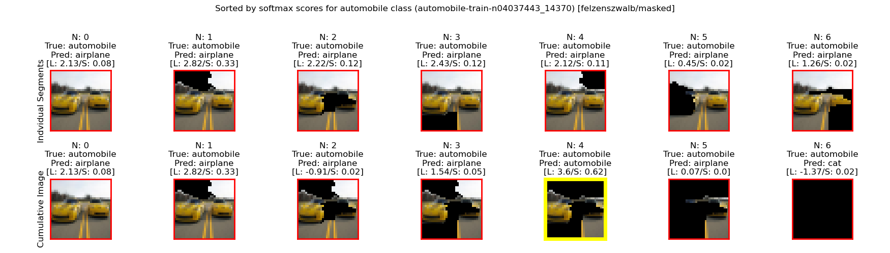 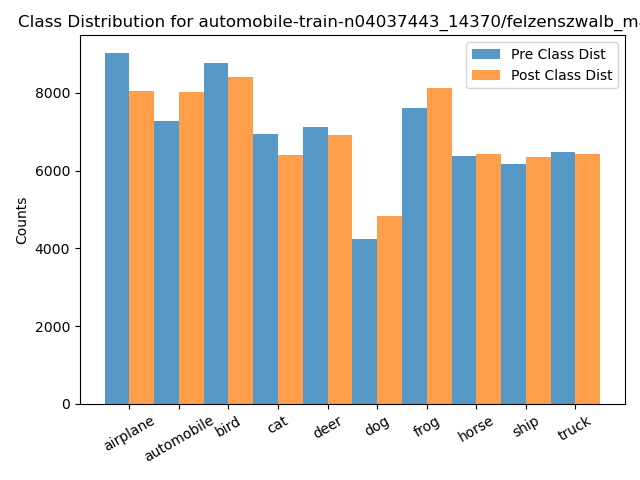
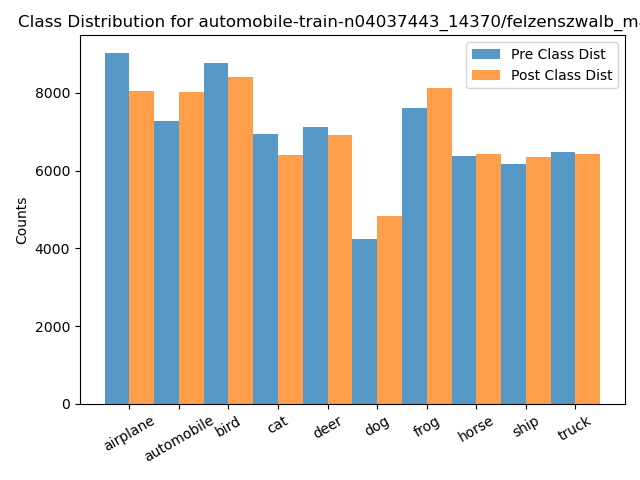
ID: automobile-train-n04037443_14370/felzenszwalb_gaussian_softmax
Accuracy: 0.687 -> 0.688
Mean Recall: 0.687 -> 0.688
Mean Precision: 0.692 -> 0.689
Mean F1: 0.684 -> 0.685
Target Recall: 0.769 -> 0.821
Target Precision: 0.74 -> 0.654
Target F1: 0.754 -> 0.728
Orig Pred Recall: 0.877 -> 0.825
Orig Pred Precision: 0.68 -> 0.781
Orig Pred F1: 0.766 -> 0.802
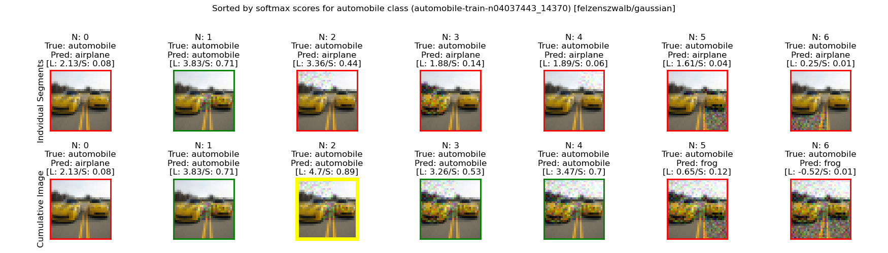 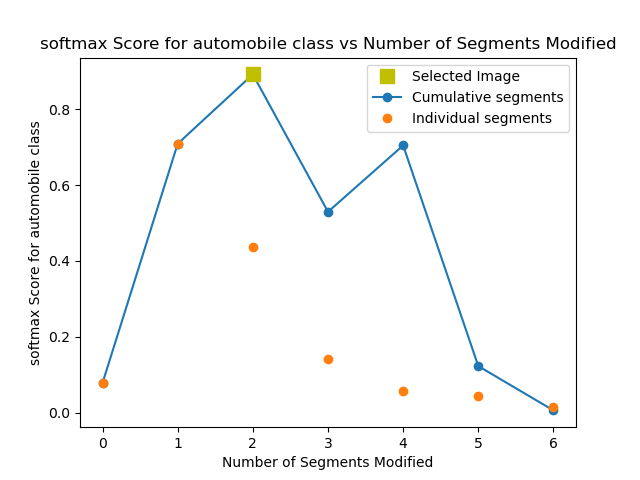 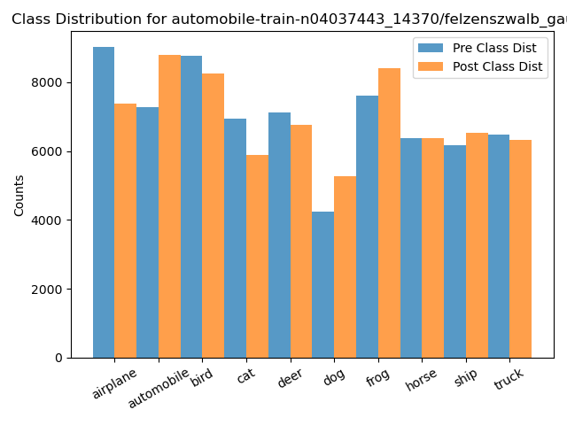ID: automobile-train-n03777568_7003/felzenszwalb_gaussian_softmax
Accuracy: 0.687 -> 0.688
Mean Recall: 0.687 -> 0.688
Mean Precision: 0.692 -> 0.688
Mean F1: 0.684 -> 0.684
Target Recall: 0.769 -> 0.812
Target Precision: 0.74 -> 0.662
Target F1: 0.754 -> 0.73
Orig Pred Recall: 0.877 -> 0.824
Orig Pred Precision: 0.68 -> 0.786
Orig Pred F1: 0.766 -> 0.805
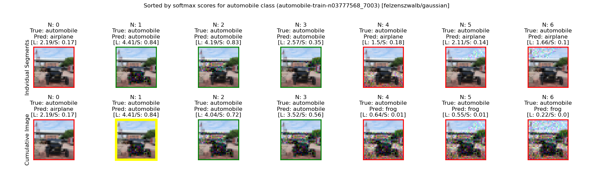 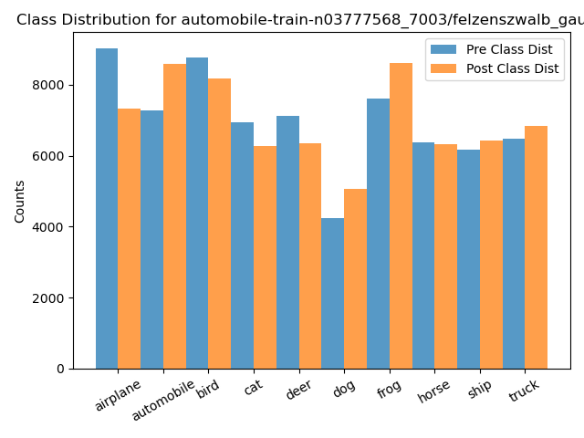
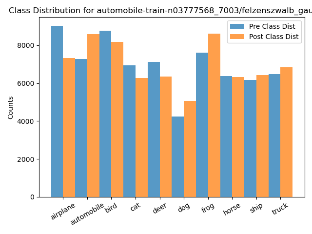
ID: automobile-train-n04037443_11051/felzenszwalb_masked_softmax
Accuracy: 0.687 -> 0.687
Mean Recall: 0.687 -> 0.687
Mean Precision: 0.692 -> 0.69
Mean F1: 0.684 -> 0.685
Target Recall: 0.769 -> 0.815
Target Precision: 0.74 -> 0.66
Target F1: 0.754 -> 0.729
Orig Pred Recall: 0.877 -> 0.787
Orig Pred Precision: 0.68 -> 0.827
Orig Pred F1: 0.766 -> 0.806
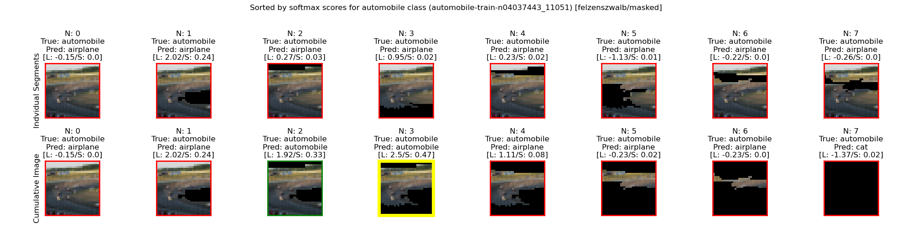 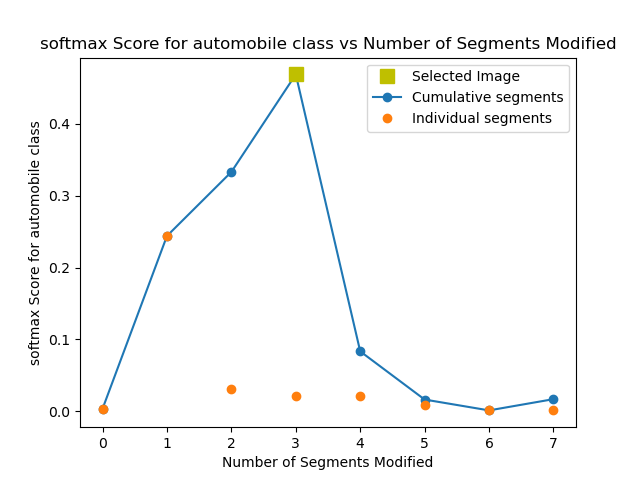 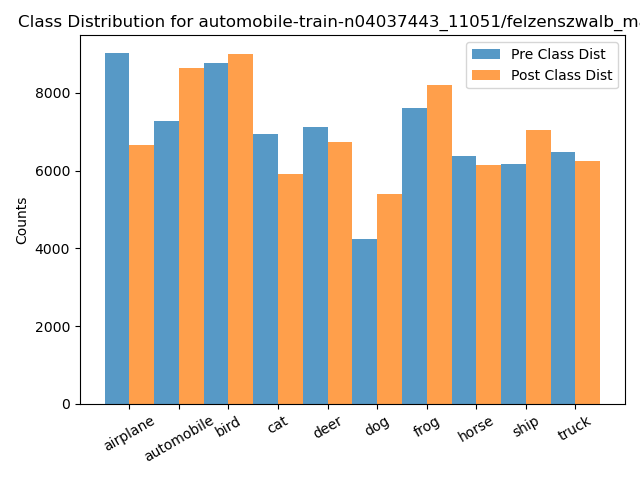ID: automobile-train-n03268790_10833/felzenszwalb_gaussian_softmax
Accuracy: 0.687 -> 0.686
Mean Recall: 0.687 -> 0.686
Mean Precision: 0.692 -> 0.69
Mean F1: 0.684 -> 0.682
Target Recall: 0.769 -> 0.823
Target Precision: 0.74 -> 0.661
Target F1: 0.754 -> 0.733
Orig Pred Recall: 0.877 -> 0.823
Orig Pred Precision: 0.68 -> 0.784
Orig Pred F1: 0.766 -> 0.803
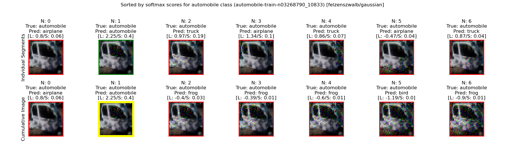 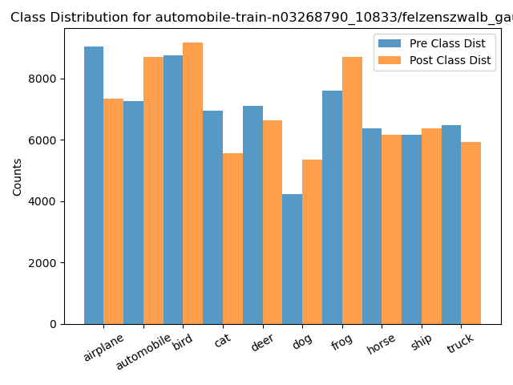
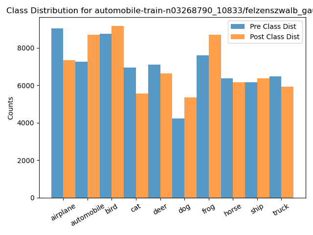
ID: automobile-train-n03141065_12206/felzenszwalb_gaussian_softmax
Accuracy: 0.687 -> 0.686
Mean Recall: 0.687 -> 0.686
Mean Precision: 0.692 -> 0.689
Mean F1: 0.684 -> 0.681
Target Recall: 0.769 -> 0.837
Target Precision: 0.74 -> 0.645
Target F1: 0.754 -> 0.729
Orig Pred Recall: 0.877 -> 0.847
Orig Pred Precision: 0.68 -> 0.747
Orig Pred F1: 0.766 -> 0.794
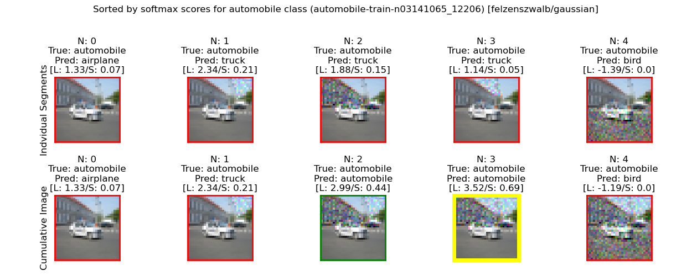 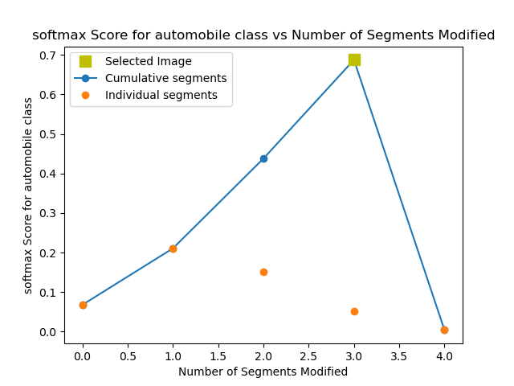 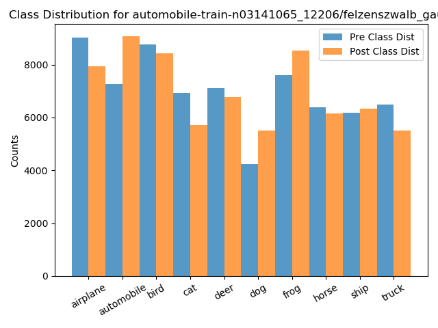ID: automobile-train-n03268790_11589/felzenszwalb_gaussian_softmax
Accuracy: 0.687 -> 0.685
Mean Recall: 0.687 -> 0.685
Mean Precision: 0.692 -> 0.689
Mean F1: 0.684 -> 0.681
Target Recall: 0.769 -> 0.79
Target Precision: 0.74 -> 0.709
Target F1: 0.754 -> 0.747
Orig Pred Recall: 0.808 -> 0.777
Orig Pred Precision: 0.744 -> 0.791
Orig Pred F1: 0.775 -> 0.784
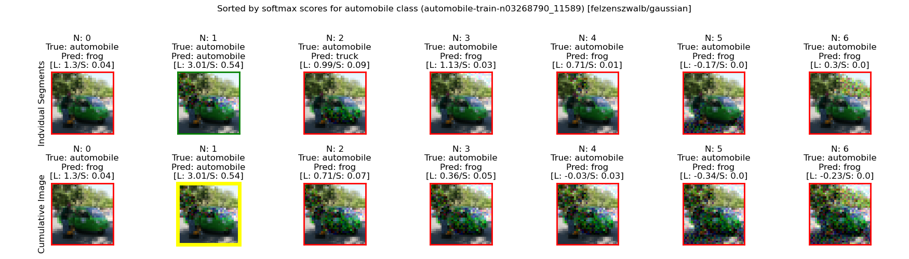 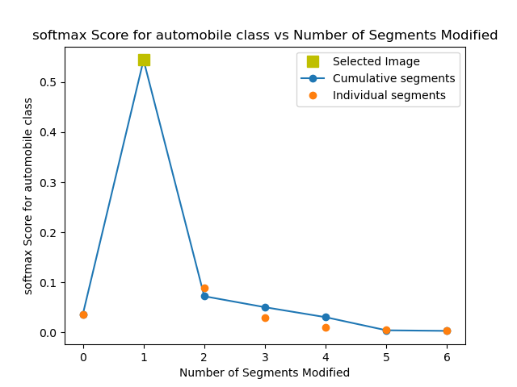 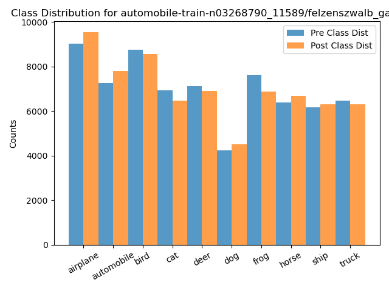ID: automobile-train-n03141065_12206/felzenszwalb_masked_softmax
Accuracy: 0.687 -> 0.685
Mean Recall: 0.687 -> 0.685
Mean Precision: 0.692 -> 0.689
Mean F1: 0.684 -> 0.68
Target Recall: 0.769 -> 0.85
Target Precision: 0.74 -> 0.616
Target F1: 0.754 -> 0.714
Orig Pred Recall: 0.877 -> 0.843
Orig Pred Precision: 0.68 -> 0.758
Orig Pred F1: 0.766 -> 0.798
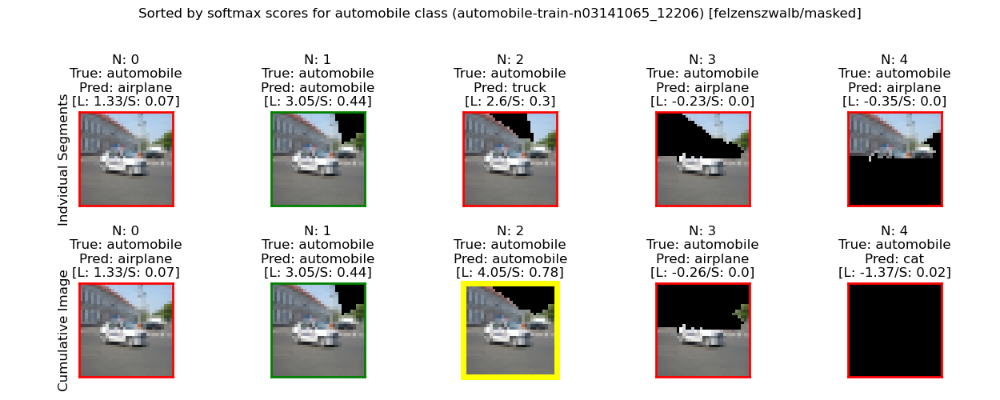 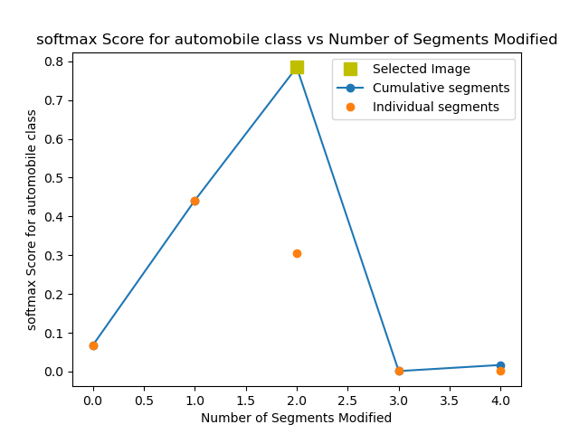 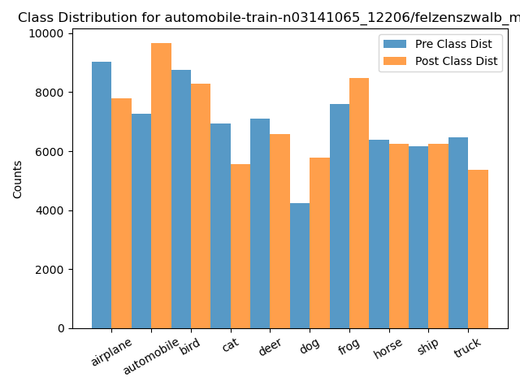ID: automobile-train-n02958343_5094/felzenszwalb_gaussian_softmax
Accuracy: 0.687 -> 0.685
Mean Recall: 0.687 -> 0.685
Mean Precision: 0.692 -> 0.687
Mean F1: 0.684 -> 0.68
Target Recall: 0.769 -> 0.83
Target Precision: 0.74 -> 0.659
Target F1: 0.754 -> 0.734
Orig Pred Recall: 0.743 -> 0.715
Orig Pred Precision: 0.594 -> 0.627
Orig Pred F1: 0.66 -> 0.669
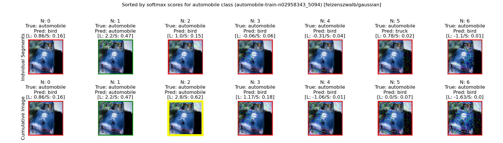 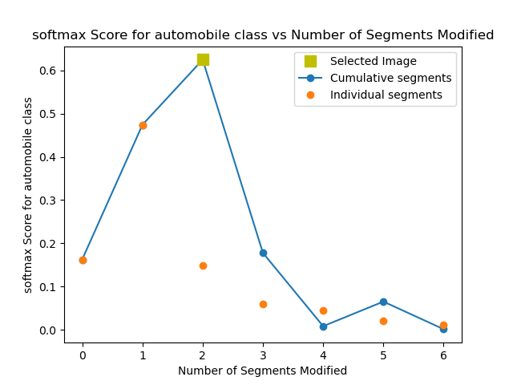 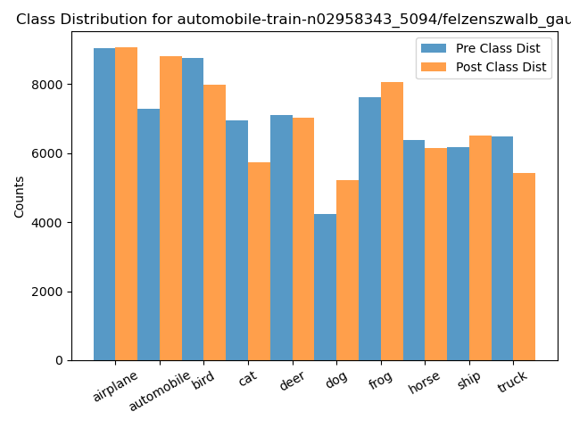ID: automobile-train-n03870105_2471/felzenszwalb_gaussian_softmax
Accuracy: 0.687 -> 0.683
Mean Recall: 0.687 -> 0.683
Mean Precision: 0.692 -> 0.691
Mean F1: 0.684 -> 0.679
Target Recall: 0.769 -> 0.797
Target Precision: 0.74 -> 0.71
Target F1: 0.754 -> 0.751
Orig Pred Recall: 0.877 -> 0.859
Orig Pred Precision: 0.68 -> 0.707
Orig Pred F1: 0.766 -> 0.776
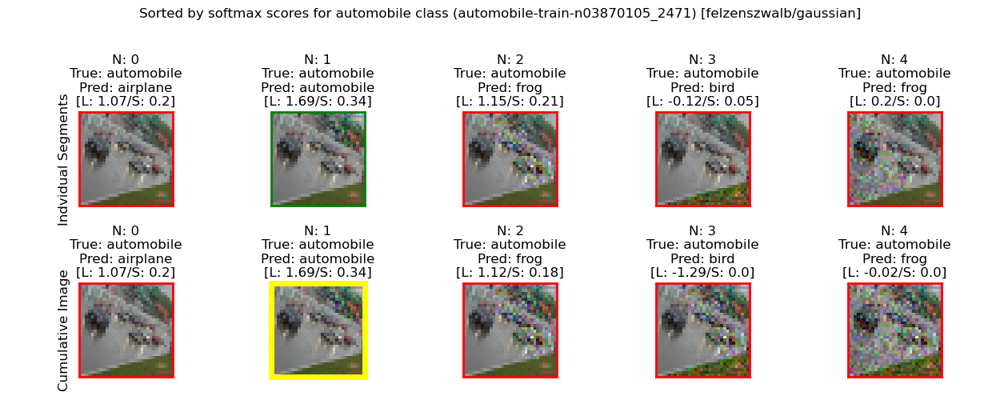 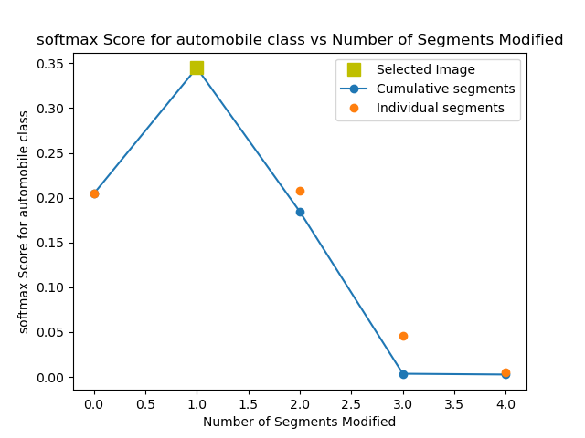
ID: automobile-train-n03421669_2883/felzenszwalb_gaussian_softmax
Accuracy: 0.687 -> 0.683
Mean Recall: 0.687 -> 0.683
Mean Precision: 0.692 -> 0.685
Mean F1: 0.684 -> 0.678
Target Recall: 0.769 -> 0.826
Target Precision: 0.74 -> 0.616
Target F1: 0.754 -> 0.706
Orig Pred Recall: 0.877 -> 0.827
Orig Pred Precision: 0.68 -> 0.784
Orig Pred F1: 0.766 -> 0.805
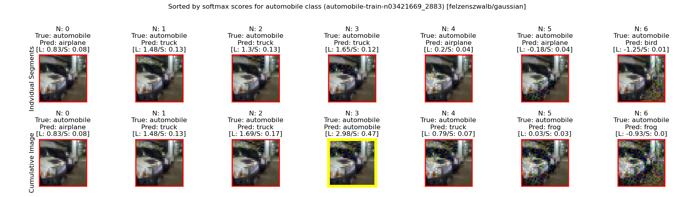 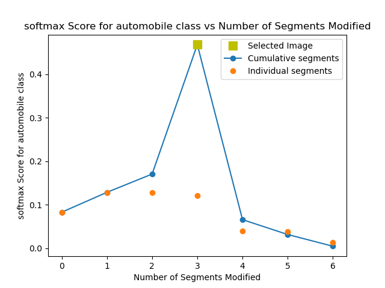 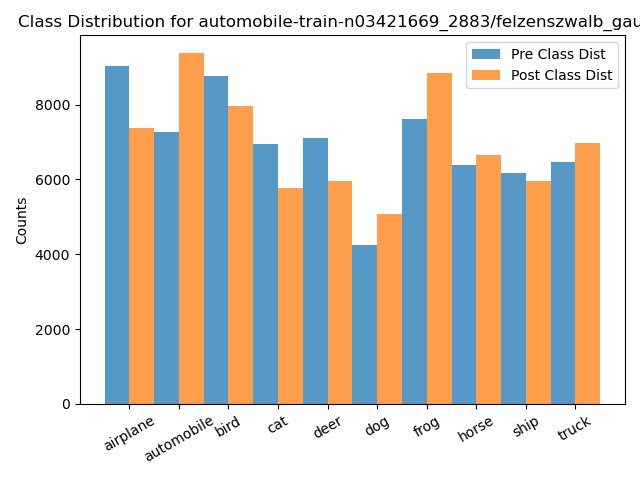ID: automobile-train-n03670208_6606/felzenszwalb_masked_softmax
Accuracy: 0.687 -> 0.682
Mean Recall: 0.687 -> 0.682
Mean Precision: 0.692 -> 0.69
Mean F1: 0.684 -> 0.678
Target Recall: 0.769 -> 0.807
Target Precision: 0.74 -> 0.701
Target F1: 0.754 -> 0.751
Orig Pred Recall: 0.668 -> 0.597
Orig Pred Precision: 0.722 -> 0.782
Orig Pred F1: 0.694 -> 0.677
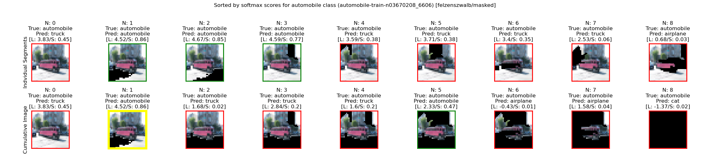 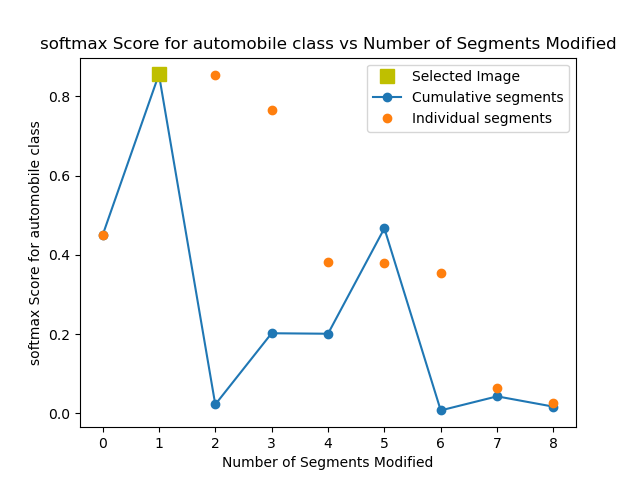ID: automobile-train-n03421669_2883/felzenszwalb_masked_softmax
Accuracy: 0.687 -> 0.682
Mean Recall: 0.687 -> 0.682
Mean Precision: 0.692 -> 0.688
Mean F1: 0.684 -> 0.678
Target Recall: 0.769 -> 0.827
Target Precision: 0.74 -> 0.653
Target F1: 0.754 -> 0.73
Orig Pred Recall: 0.877 -> 0.872
Orig Pred Precision: 0.68 -> 0.701
Orig Pred F1: 0.766 -> 0.777
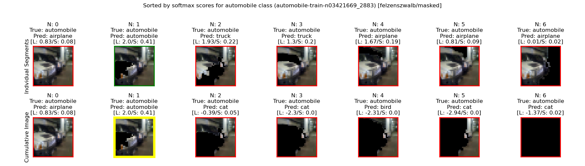 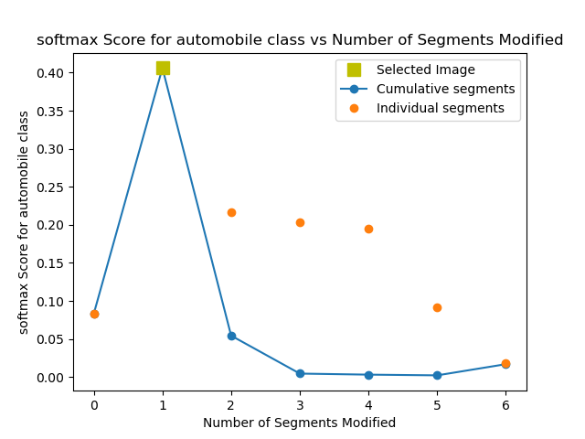 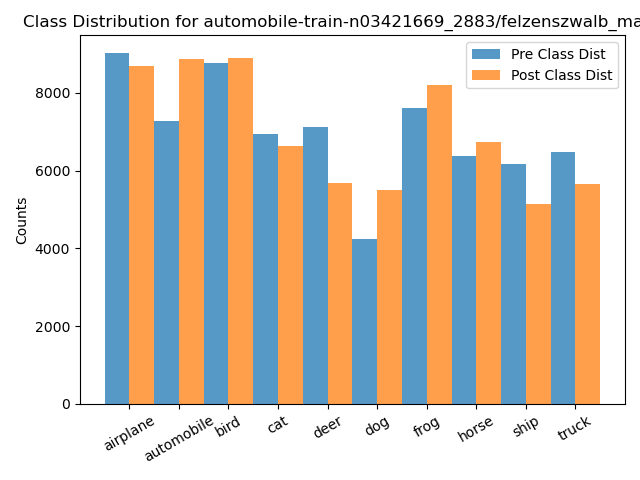ID: automobile-train-n03498781_3210/felzenszwalb_masked_softmax
Accuracy: 0.687 -> 0.681
Mean Recall: 0.687 -> 0.681
Mean Precision: 0.692 -> 0.69
Mean F1: 0.684 -> 0.677
Target Recall: 0.769 -> 0.851
Target Precision: 0.74 -> 0.638
Target F1: 0.754 -> 0.729
Orig Pred Recall: 0.668 -> 0.538
Orig Pred Precision: 0.722 -> 0.815
Orig Pred F1: 0.694 -> 0.648
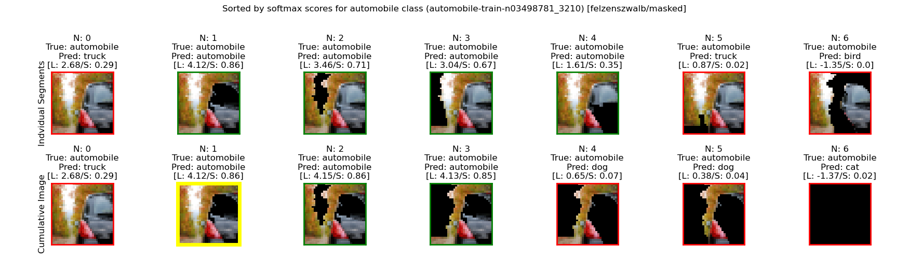 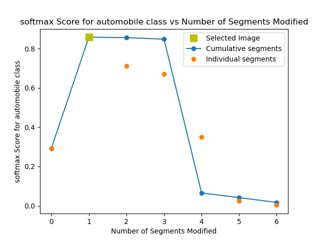 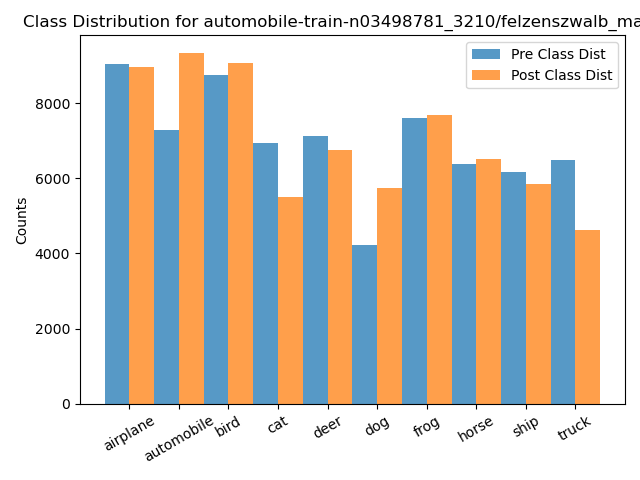ID: automobile-train-n02831335_16225/felzenszwalb_gaussian_softmax
Accuracy: 0.687 -> 0.681
Mean Recall: 0.687 -> 0.681
Mean Precision: 0.692 -> 0.69
Mean F1: 0.684 -> 0.677
Target Recall: 0.769 -> 0.868
Target Precision: 0.74 -> 0.59
Target F1: 0.754 -> 0.703
Orig Pred Recall: 0.668 -> 0.55
Orig Pred Precision: 0.722 -> 0.798
Orig Pred F1: 0.694 -> 0.651
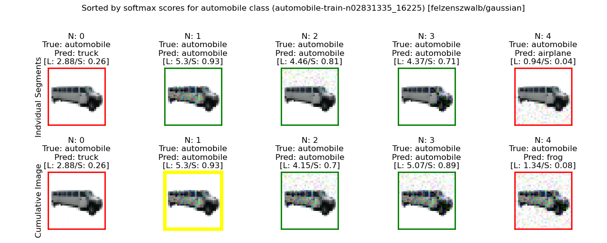 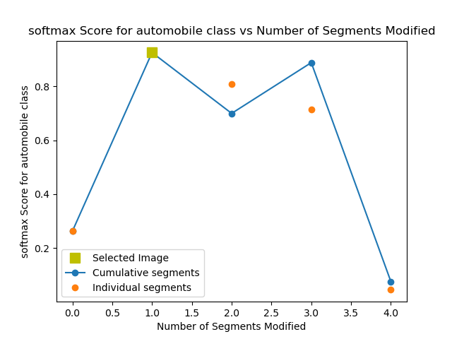 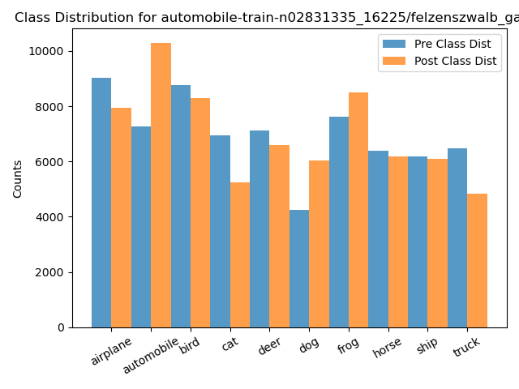ID: automobile-train-n03870105_3254/felzenszwalb_gaussian_softmax
Accuracy: 0.687 -> 0.681
Mean Recall: 0.687 -> 0.681
Mean Precision: 0.692 -> 0.685
Mean F1: 0.684 -> 0.675
Target Recall: 0.769 -> 0.823
Target Precision: 0.74 -> 0.626
Target F1: 0.754 -> 0.711
Orig Pred Recall: 0.688 -> 0.617
Orig Pred Precision: 0.78 -> 0.828
Orig Pred F1: 0.731 -> 0.707
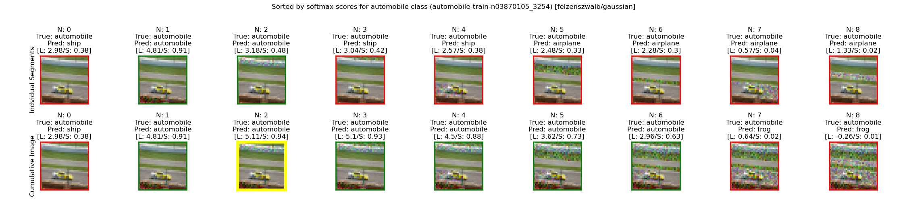 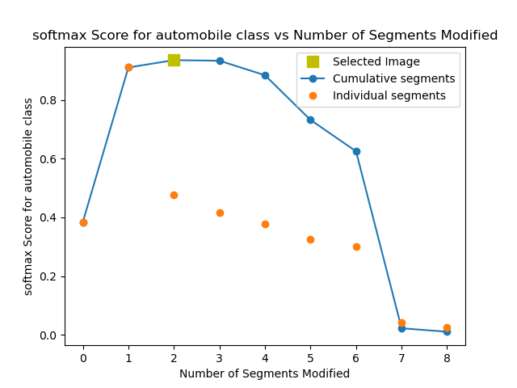 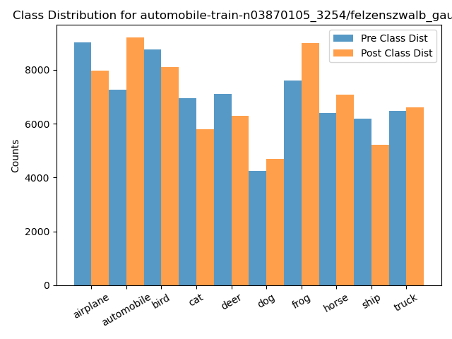ID: automobile-train-n04037443_664/felzenszwalb_gaussian_softmax
Accuracy: 0.687 -> 0.68
Mean Recall: 0.687 -> 0.68
Mean Precision: 0.692 -> 0.689
Mean F1: 0.684 -> 0.678
Target Recall: 0.769 -> 0.853
Target Precision: 0.74 -> 0.565
Target F1: 0.754 -> 0.68
Orig Pred Recall: 0.877 -> 0.775
Orig Pred Precision: 0.68 -> 0.836
Orig Pred F1: 0.766 -> 0.804
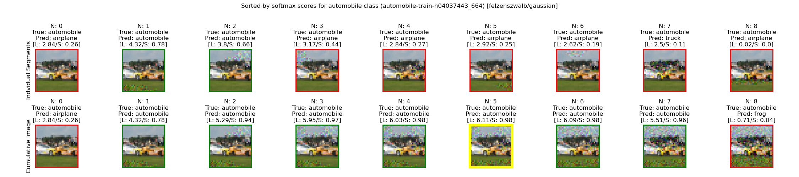 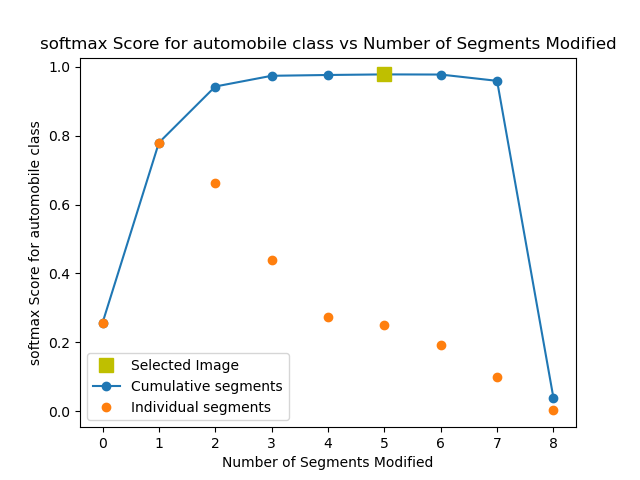 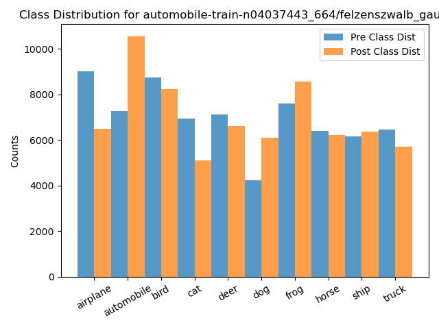ID: automobile-train-n02930766_11335/felzenszwalb_masked_softmax
Accuracy: 0.687 -> 0.68
Mean Recall: 0.687 -> 0.68
Mean Precision: 0.692 -> 0.687
Mean F1: 0.684 -> 0.675
Target Recall: 0.769 -> 0.855
Target Precision: 0.74 -> 0.609
Target F1: 0.754 -> 0.711
Orig Pred Recall: 0.688 -> 0.659
Orig Pred Precision: 0.78 -> 0.794
Orig Pred F1: 0.731 -> 0.72
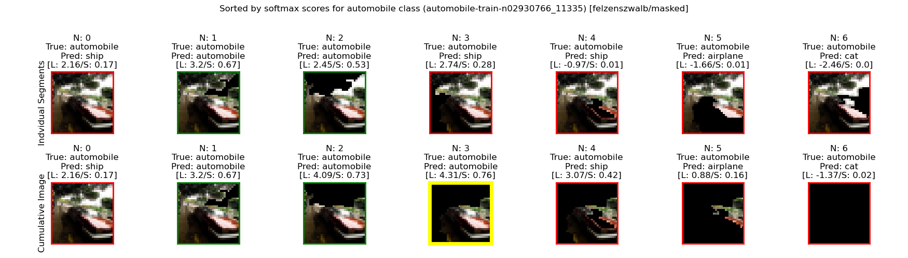ID: automobile-train-n04347119_3186/felzenszwalb_gaussian_softmax
Accuracy: 0.687 -> 0.68
Mean Recall: 0.687 -> 0.68
Mean Precision: 0.692 -> 0.689
Mean F1: 0.684 -> 0.675
Target Recall: 0.769 -> 0.855
Target Precision: 0.74 -> 0.632
Target F1: 0.754 -> 0.727
Orig Pred Recall: 0.668 -> 0.521
Orig Pred Precision: 0.722 -> 0.828
Orig Pred F1: 0.694 -> 0.639
ID: automobile-train-n03100240_7316/felzenszwalb_gaussian_softmax
Accuracy: 0.687 -> 0.679
Mean Recall: 0.687 -> 0.679
Mean Precision: 0.692 -> 0.688
Mean F1: 0.684 -> 0.674
Target Recall: 0.769 -> 0.795
Target Precision: 0.74 -> 0.695
Target F1: 0.754 -> 0.742
Orig Pred Recall: 0.688 -> 0.583
Orig Pred Precision: 0.78 -> 0.855
Orig Pred F1: 0.731 -> 0.693
ID: automobile-train-n02930766_11335/felzenszwalb_gaussian_softmax
Accuracy: 0.687 -> 0.679
Mean Recall: 0.687 -> 0.679
Mean Precision: 0.692 -> 0.686
Mean F1: 0.684 -> 0.673
Target Recall: 0.769 -> 0.848
Target Precision: 0.74 -> 0.614
Target F1: 0.754 -> 0.712
Orig Pred Recall: 0.688 -> 0.646
Orig Pred Precision: 0.78 -> 0.804
Orig Pred F1: 0.731 -> 0.716
ID: automobile-train-n02930766_15842/felzenszwalb_gaussian_softmax
Accuracy: 0.687 -> 0.678
Mean Recall: 0.687 -> 0.678
Mean Precision: 0.692 -> 0.69
Mean F1: 0.684 -> 0.674
Target Recall: 0.769 -> 0.845
Target Precision: 0.74 -> 0.65
Target F1: 0.754 -> 0.735
Orig Pred Recall: 0.668 -> 0.53
Orig Pred Precision: 0.722 -> 0.825
Orig Pred F1: 0.694 -> 0.645


ID: automobile-train-n03777568_7003/felzenszwalb_masked_softmax
Accuracy: 0.687 -> 0.678
Mean Recall: 0.687 -> 0.678
Mean Precision: 0.692 -> 0.692
Mean F1: 0.684 -> 0.676
Target Recall: 0.769 -> 0.847
Target Precision: 0.74 -> 0.628
Target F1: 0.754 -> 0.721
Orig Pred Recall: 0.877 -> 0.794
Orig Pred Precision: 0.68 -> 0.814
Orig Pred F1: 0.766 -> 0.804
ID: automobile-train-n04201733_16432/felzenszwalb_masked_softmax
Accuracy: 0.687 -> 0.678
Mean Recall: 0.687 -> 0.678
Mean Precision: 0.692 -> 0.689
Mean F1: 0.684 -> 0.671
Target Recall: 0.769 -> 0.848
Target Precision: 0.74 -> 0.617
Target F1: 0.754 -> 0.714
Orig Pred Recall: 0.549 -> 0.37
Orig Pred Precision: 0.553 -> 0.723
Orig Pred F1: 0.551 -> 0.489
ID: automobile-train-n03777568_5145/felzenszwalb_gaussian_softmax
Accuracy: 0.687 -> 0.678
Mean Recall: 0.687 -> 0.678
Mean Precision: 0.692 -> 0.689
Mean F1: 0.684 -> 0.672
Target Recall: 0.769 -> 0.857
Target Precision: 0.74 -> 0.63
Target F1: 0.754 -> 0.726
Orig Pred Recall: 0.668 -> 0.509
Orig Pred Precision: 0.722 -> 0.835
Orig Pred F1: 0.694 -> 0.633

ID: automobile-train-n04285965_10066/felzenszwalb_masked_softmax
Accuracy: 0.687 -> 0.678
Mean Recall: 0.687 -> 0.678
Mean Precision: 0.692 -> 0.684
Mean F1: 0.684 -> 0.67
Target Recall: 0.769 -> 0.805
Target Precision: 0.74 -> 0.64
Target F1: 0.754 -> 0.713
Orig Pred Recall: 0.877 -> 0.874
Orig Pred Precision: 0.68 -> 0.705
Orig Pred F1: 0.766 -> 0.78
ID: automobile-train-n03421669_1643/felzenszwalb_masked_softmax
Accuracy: 0.687 -> 0.677
Mean Recall: 0.687 -> 0.677
Mean Precision: 0.692 -> 0.691
Mean F1: 0.684 -> 0.673
Target Recall: 0.769 -> 0.829
Target Precision: 0.74 -> 0.676
Target F1: 0.754 -> 0.744
Orig Pred Recall: 0.668 -> 0.524
Orig Pred Precision: 0.722 -> 0.839
Orig Pred F1: 0.694 -> 0.645
ID: automobile-train-n03404012_4491/felzenszwalb_masked_softmax
Accuracy: 0.687 -> 0.677
Mean Recall: 0.687 -> 0.677
Mean Precision: 0.692 -> 0.69
Mean F1: 0.684 -> 0.672
Target Recall: 0.769 -> 0.841
Target Precision: 0.74 -> 0.655
Target F1: 0.754 -> 0.737
Orig Pred Recall: 0.668 -> 0.508
Orig Pred Precision: 0.722 -> 0.843
Orig Pred F1: 0.694 -> 0.634

ID: automobile-train-n02701002_6025/felzenszwalb_gaussian_softmax
Accuracy: 0.687 -> 0.677
Mean Recall: 0.687 -> 0.677
Mean Precision: 0.692 -> 0.689
Mean F1: 0.684 -> 0.671
Target Recall: 0.769 -> 0.856
Target Precision: 0.74 -> 0.623
Target F1: 0.754 -> 0.722
Orig Pred Recall: 0.668 -> 0.502
Orig Pred Precision: 0.722 -> 0.839
Orig Pred F1: 0.694 -> 0.628
ID: automobile-train-n02701002_2011/felzenszwalb_gaussian_softmax
Accuracy: 0.687 -> 0.676
Mean Recall: 0.687 -> 0.676
Mean Precision: 0.692 -> 0.69
Mean F1: 0.684 -> 0.67
Target Recall: 0.769 -> 0.843
Target Precision: 0.74 -> 0.655
Target F1: 0.754 -> 0.737
Orig Pred Recall: 0.668 -> 0.485
Orig Pred Precision: 0.722 -> 0.857
Orig Pred F1: 0.694 -> 0.62


ID: automobile-train-n03498781_6290/felzenszwalb_masked_softmax
Accuracy: 0.687 -> 0.675
Mean Recall: 0.687 -> 0.675
Mean Precision: 0.692 -> 0.691
Mean F1: 0.684 -> 0.67
Target Recall: 0.769 -> 0.863
Target Precision: 0.74 -> 0.607
Target F1: 0.754 -> 0.713
Orig Pred Recall: 0.427 -> 0.518
Orig Pred Precision: 0.706 -> 0.612
Orig Pred F1: 0.532 -> 0.561
ID: automobile-train-n03777568_1753/felzenszwalb_masked_softmax
Accuracy: 0.687 -> 0.674
Mean Recall: 0.687 -> 0.674
Mean Precision: 0.692 -> 0.69
Mean F1: 0.684 -> 0.668
Target Recall: 0.769 -> 0.872
Target Precision: 0.74 -> 0.602
Target F1: 0.754 -> 0.712
Orig Pred Recall: 0.668 -> 0.474
Orig Pred Precision: 0.722 -> 0.857
Orig Pred F1: 0.694 -> 0.611
ID: automobile-train-n03670208_11066/felzenszwalb_masked_softmax
Accuracy: 0.687 -> 0.674
Mean Recall: 0.687 -> 0.674
Mean Precision: 0.692 -> 0.69
Mean F1: 0.684 -> 0.668
Target Recall: 0.769 -> 0.857
Target Precision: 0.74 -> 0.632
Target F1: 0.754 -> 0.727
Orig Pred Recall: 0.668 -> 0.459
Orig Pred Precision: 0.722 -> 0.873
Orig Pred F1: 0.694 -> 0.601

ID: automobile-train-n03777568_4506/felzenszwalb_gaussian_softmax
Accuracy: 0.687 -> 0.674
Mean Recall: 0.687 -> 0.674
Mean Precision: 0.692 -> 0.684
Mean F1: 0.684 -> 0.668
Target Recall: 0.769 -> 0.832
Target Precision: 0.74 -> 0.587
Target F1: 0.754 -> 0.688
Orig Pred Recall: 0.734 -> 0.602
Orig Pred Precision: 0.804 -> 0.902
Orig Pred F1: 0.767 -> 0.722
ID: automobile-train-n03670208_6606/felzenszwalb_gaussian_softmax
Accuracy: 0.687 -> 0.673
Mean Recall: 0.687 -> 0.673
Mean Precision: 0.692 -> 0.691
Mean F1: 0.684 -> 0.667
Target Recall: 0.769 -> 0.882
Target Precision: 0.74 -> 0.582
Target F1: 0.754 -> 0.701
Orig Pred Recall: 0.668 -> 0.452
Orig Pred Precision: 0.722 -> 0.872
Orig Pred F1: 0.694 -> 0.595
ID: automobile-train-n03870105_3254/felzenszwalb_masked_softmax
Accuracy: 0.687 -> 0.673
Mean Recall: 0.687 -> 0.673
Mean Precision: 0.692 -> 0.685
Mean F1: 0.684 -> 0.668
Target Recall: 0.769 -> 0.855
Target Precision: 0.74 -> 0.54
Target F1: 0.754 -> 0.662
Orig Pred Recall: 0.688 -> 0.559
Orig Pred Precision: 0.78 -> 0.864
Orig Pred F1: 0.731 -> 0.679

ID: automobile-train-n03777568_12615/felzenszwalb_gaussian_softmax
Accuracy: 0.687 -> 0.673
Mean Recall: 0.687 -> 0.673
Mean Precision: 0.692 -> 0.691
Mean F1: 0.684 -> 0.666
Target Recall: 0.769 -> 0.868
Target Precision: 0.74 -> 0.603
Target F1: 0.754 -> 0.712
Orig Pred Recall: 0.668 -> 0.443
Orig Pred Precision: 0.722 -> 0.881
Orig Pred F1: 0.694 -> 0.59
ID: automobile-train-n04347119_1162/felzenszwalb_masked_softmax
Accuracy: 0.687 -> 0.673
Mean Recall: 0.687 -> 0.673
Mean Precision: 0.692 -> 0.688
Mean F1: 0.684 -> 0.667
Target Recall: 0.769 -> 0.862
Target Precision: 0.74 -> 0.604
Target F1: 0.754 -> 0.71
Orig Pred Recall: 0.668 -> 0.514
Orig Pred Precision: 0.722 -> 0.837
Orig Pred F1: 0.694 -> 0.637
ID: automobile-train-n04302988_1726/felzenszwalb_gaussian_softmax
Accuracy: 0.687 -> 0.672
Mean Recall: 0.687 -> 0.672
Mean Precision: 0.692 -> 0.691
Mean F1: 0.684 -> 0.665
Target Recall: 0.769 -> 0.883
Target Precision: 0.74 -> 0.581
Target F1: 0.754 -> 0.701
Orig Pred Recall: 0.668 -> 0.437
Orig Pred Precision: 0.722 -> 0.883
Orig Pred F1: 0.694 -> 0.584
ID: automobile-train-n03498781_3210/felzenszwalb_gaussian_softmax
Accuracy: 0.687 -> 0.671
Mean Recall: 0.687 -> 0.671
Mean Precision: 0.692 -> 0.691
Mean F1: 0.684 -> 0.666
Target Recall: 0.769 -> 0.863
Target Precision: 0.74 -> 0.617
Target F1: 0.754 -> 0.719
Orig Pred Recall: 0.668 -> 0.495
Orig Pred Precision: 0.722 -> 0.846
Orig Pred F1: 0.694 -> 0.624
ID: automobile-train-n03543394_11234/felzenszwalb_gaussian_softmax
Accuracy: 0.687 -> 0.669
Mean Recall: 0.687 -> 0.669
Mean Precision: 0.692 -> 0.692
Mean F1: 0.684 -> 0.662
Target Recall: 0.769 -> 0.884
Target Precision: 0.74 -> 0.582
Target F1: 0.754 -> 0.702
Orig Pred Recall: 0.668 -> 0.408
Orig Pred Precision: 0.722 -> 0.899
Orig Pred F1: 0.694 -> 0.561
ID: automobile-train-n04037443_5650/felzenszwalb_gaussian_softmax
Accuracy: 0.687 -> 0.669
Mean Recall: 0.687 -> 0.669
Mean Precision: 0.692 -> 0.691
Mean F1: 0.684 -> 0.662
Target Recall: 0.769 -> 0.891
Target Precision: 0.74 -> 0.568
Target F1: 0.754 -> 0.694
Orig Pred Recall: 0.668 -> 0.414
Orig Pred Precision: 0.722 -> 0.896
Orig Pred F1: 0.694 -> 0.567


ID: automobile-train-n03268790_7411/felzenszwalb_masked_softmax
Accuracy: 0.687 -> 0.668
Mean Recall: 0.687 -> 0.668
Mean Precision: 0.692 -> 0.691
Mean F1: 0.684 -> 0.66
Target Recall: 0.769 -> 0.891
Target Precision: 0.74 -> 0.567
Target F1: 0.754 -> 0.693
Orig Pred Recall: 0.668 -> 0.394
Orig Pred Precision: 0.722 -> 0.903
Orig Pred F1: 0.694 -> 0.548

ID: automobile-train-n03777568_7040/felzenszwalb_gaussian_softmax
Accuracy: 0.687 -> 0.666
Mean Recall: 0.687 -> 0.666
Mean Precision: 0.692 -> 0.69
Mean F1: 0.684 -> 0.658
Target Recall: 0.769 -> 0.876
Target Precision: 0.74 -> 0.6
Target F1: 0.754 -> 0.712
Orig Pred Recall: 0.668 -> 0.407
Orig Pred Precision: 0.722 -> 0.909
Orig Pred F1: 0.694 -> 0.562
ID: automobile-train-n02958343_5094/felzenszwalb_masked_softmax
Accuracy: 0.687 -> 0.665
Mean Recall: 0.687 -> 0.665
Mean Precision: 0.692 -> 0.687
Mean F1: 0.684 -> 0.661
Target Recall: 0.769 -> 0.877
Target Precision: 0.74 -> 0.487
Target F1: 0.754 -> 0.627
Orig Pred Recall: 0.743 -> 0.622
Orig Pred Precision: 0.594 -> 0.738
Orig Pred F1: 0.66 -> 0.675
ID: automobile-train-n03594945_12619/felzenszwalb_masked_softmax
Accuracy: 0.687 -> 0.66
Mean Recall: 0.687 -> 0.66
Mean Precision: 0.692 -> 0.691
Mean F1: 0.684 -> 0.649
Target Recall: 0.769 -> 0.908
Target Precision: 0.74 -> 0.525
Target F1: 0.754 -> 0.665
Orig Pred Recall: 0.668 -> 0.301
Orig Pred Precision: 0.722 -> 0.924
Orig Pred F1: 0.694 -> 0.454

ID: automobile-train-n03594945_16509/felzenszwalb_gaussian_softmax
Accuracy: 0.687 -> 0.657
Mean Recall: 0.687 -> 0.657
Mean Precision: 0.692 -> 0.695
Mean F1: 0.684 -> 0.655
Target Recall: 0.769 -> 0.9
Target Precision: 0.74 -> 0.438
Target F1: 0.754 -> 0.589
Orig Pred Recall: 0.877 -> 0.806
Orig Pred Precision: 0.68 -> 0.796
Orig Pred F1: 0.766 -> 0.801
ID: automobile-train-n02958343_14872/felzenszwalb_masked_softmax
Accuracy: 0.687 -> 0.656
Mean Recall: 0.687 -> 0.656
Mean Precision: 0.692 -> 0.69
Mean F1: 0.684 -> 0.643
Target Recall: 0.769 -> 0.904
Target Precision: 0.74 -> 0.523
Target F1: 0.754 -> 0.662
Orig Pred Recall: 0.668 -> 0.253
Orig Pred Precision: 0.722 -> 0.934
Orig Pred F1: 0.694 -> 0.398
ID: automobile-train-n02930766_19772/felzenszwalb_gaussian_softmax
Accuracy: 0.687 -> 0.656
Mean Recall: 0.687 -> 0.656
Mean Precision: 0.692 -> 0.684
Mean F1: 0.684 -> 0.655
Target Recall: 0.769 -> 0.857
Target Precision: 0.74 -> 0.454
Target F1: 0.754 -> 0.594
Orig Pred Recall: 0.808 -> 0.674
Orig Pred Precision: 0.744 -> 0.825
Orig Pred F1: 0.775 -> 0.742
ID: automobile-train-n02930766_27477/felzenszwalb_masked_softmax
Accuracy: 0.687 -> 0.649
Mean Recall: 0.687 -> 0.649
Mean Precision: 0.692 -> 0.707
Mean F1: 0.684 -> 0.627
Target Recall: 0.769 -> 0.888
Target Precision: 0.74 -> 0.55
Target F1: 0.754 -> 0.679
Orig Pred Recall: 0.549 -> 0.076
Orig Pred Precision: 0.553 -> 0.932
Orig Pred F1: 0.551 -> 0.141

ID: automobile-train-n03268790_7411/felzenszwalb_gaussian_softmax
Accuracy: 0.687 -> 0.648
Mean Recall: 0.687 -> 0.648
Mean Precision: 0.692 -> 0.691
Mean F1: 0.684 -> 0.63
Target Recall: 0.769 -> 0.923
Target Precision: 0.74 -> 0.482
Target F1: 0.754 -> 0.633
Orig Pred Recall: 0.668 -> 0.177
Orig Pred Precision: 0.722 -> 0.95
Orig Pred F1: 0.694 -> 0.298
ID: automobile-train-n03472937_120/felzenszwalb_gaussian_softmax
Accuracy: 0.687 -> 0.644
Mean Recall: 0.687 -> 0.644
Mean Precision: 0.692 -> 0.68
Mean F1: 0.684 -> 0.626
Target Recall: 0.769 -> 0.845
Target Precision: 0.74 -> 0.648
Target F1: 0.754 -> 0.733
Orig Pred Recall: 0.668 -> 0.181
Orig Pred Precision: 0.722 -> 0.951
Orig Pred F1: 0.694 -> 0.304
ID: automobile-train-n02831335_12996/felzenszwalb_gaussian_softmax
Accuracy: 0.687 -> 0.643
Mean Recall: 0.687 -> 0.643
Mean Precision: 0.692 -> 0.688
Mean F1: 0.684 -> 0.621
Target Recall: 0.769 -> 0.908
Target Precision: 0.74 -> 0.493
Target F1: 0.754 -> 0.639
Orig Pred Recall: 0.668 -> 0.127
Orig Pred Precision: 0.722 -> 0.95
Orig Pred F1: 0.694 -> 0.224

ID: automobile-train-n03777568_1797/felzenszwalb_gaussian_softmax
Accuracy: 0.687 -> 0.642
Mean Recall: 0.687 -> 0.642
Mean Precision: 0.692 -> 0.688
Mean F1: 0.684 -> 0.62
Target Recall: 0.769 -> 0.917
Target Precision: 0.74 -> 0.479
Target F1: 0.754 -> 0.63
Orig Pred Recall: 0.668 -> 0.119
Orig Pred Precision: 0.722 -> 0.944
Orig Pred F1: 0.694 -> 0.211
ID: automobile-train-n03594945_1592/felzenszwalb_masked_softmax
Accuracy: 0.687 -> 0.632
Mean Recall: 0.687 -> 0.632
Mean Precision: 0.692 -> 0.591
Mean F1: 0.684 -> 0.598
Target Recall: 0.769 -> 0.911
Target Precision: 0.74 -> 0.465
Target F1: 0.754 -> 0.615
Orig Pred Recall: 0.668 -> 0.0
Orig Pred Precision: 0.722 -> 0.0
Orig Pred F1: 0.694 -> 0.0
ID: automobile-train-n02958343_14872/felzenszwalb_gaussian_softmax
Accuracy: 0.687 -> 0.63
Mean Recall: 0.687 -> 0.63
Mean Precision: 0.692 -> 0.589
Mean F1: 0.684 -> 0.596
Target Recall: 0.769 -> 0.896
Target Precision: 0.74 -> 0.48
Target F1: 0.754 -> 0.625
Orig Pred Recall: 0.668 -> 0.0
Orig Pred Precision: 0.722 -> 0.0
Orig Pred F1: 0.694 -> 0.0
ID: automobile-train-n02958343_11586/felzenszwalb_gaussian_softmax
Accuracy: 0.687 -> 0.63
Mean Recall: 0.687 -> 0.631
Mean Precision: 0.692 -> 0.588
Mean F1: 0.684 -> 0.596
Target Recall: 0.769 -> 0.898
Target Precision: 0.74 -> 0.475
Target F1: 0.754 -> 0.622
Orig Pred Recall: 0.668 -> 0.0
Orig Pred Precision: 0.722 -> 0.0
Orig Pred F1: 0.694 -> 0.0
ID: automobile-train-n03594945_5543/felzenszwalb_masked_softmax
Accuracy: 0.687 -> 0.63
Mean Recall: 0.687 -> 0.63
Mean Precision: 0.692 -> 0.608
Mean F1: 0.684 -> 0.597
Target Recall: 0.769 -> 0.921
Target Precision: 0.74 -> 0.452
Target F1: 0.754 -> 0.606
Orig Pred Recall: 0.668 -> 0.0
Orig Pred Precision: 0.722 -> 0.167
Orig Pred F1: 0.694 -> 0.0

ID: automobile-train-n02831335_16873/felzenszwalb_masked_softmax
Accuracy: 0.687 -> 0.63
Mean Recall: 0.687 -> 0.63
Mean Precision: 0.692 -> 0.63
Mean F1: 0.684 -> 0.597
Target Recall: 0.769 -> 0.922
Target Precision: 0.74 -> 0.451
Target F1: 0.754 -> 0.606
Orig Pred Recall: 0.668 -> 0.001
Orig Pred Precision: 0.722 -> 0.385
Orig Pred F1: 0.694 -> 0.001
ID: automobile-train-n03777568_927/felzenszwalb_gaussian_softmax
Accuracy: 0.687 -> 0.63
Mean Recall: 0.687 -> 0.63
Mean Precision: 0.692 -> 0.591
Mean F1: 0.684 -> 0.596
Target Recall: 0.769 -> 0.917
Target Precision: 0.74 -> 0.455
Target F1: 0.754 -> 0.608
Orig Pred Recall: 0.668 -> 0.0
Orig Pred Precision: 0.722 -> 0.0
Orig Pred F1: 0.694 -> 0.0
ID: automobile-train-n03543394_11234/felzenszwalb_masked_softmax
Accuracy: 0.687 -> 0.63
Mean Recall: 0.687 -> 0.63
Mean Precision: 0.692 -> 0.592
Mean F1: 0.684 -> 0.596
Target Recall: 0.769 -> 0.919
Target Precision: 0.74 -> 0.456
Target F1: 0.754 -> 0.609
Orig Pred Recall: 0.668 -> 0.0
Orig Pred Precision: 0.722 -> 0.0
Orig Pred F1: 0.694 -> 0.0

ID: automobile-train-n03670208_11066/felzenszwalb_gaussian_softmax
Accuracy: 0.687 -> 0.63
Mean Recall: 0.687 -> 0.63
Mean Precision: 0.692 -> 0.593
Mean F1: 0.684 -> 0.596
Target Recall: 0.769 -> 0.928
Target Precision: 0.74 -> 0.44
Target F1: 0.754 -> 0.596
Orig Pred Recall: 0.668 -> 0.0
Orig Pred Precision: 0.722 -> 0.0
Orig Pred F1: 0.694 -> 0.0
ID: automobile-train-n03594945_5543/felzenszwalb_gaussian_softmax
Accuracy: 0.687 -> 0.63
Mean Recall: 0.687 -> 0.63
Mean Precision: 0.692 -> 0.592
Mean F1: 0.684 -> 0.596
Target Recall: 0.769 -> 0.923
Target Precision: 0.74 -> 0.448
Target F1: 0.754 -> 0.603
Orig Pred Recall: 0.668 -> 0.0
Orig Pred Precision: 0.722 -> 0.0
Orig Pred F1: 0.694 -> 0.0
ID: automobile-train-n02831335_13143/felzenszwalb_gaussian_softmax
Accuracy: 0.687 -> 0.629
Mean Recall: 0.687 -> 0.629
Mean Precision: 0.692 -> 0.592
Mean F1: 0.684 -> 0.596
Target Recall: 0.769 -> 0.925
Target Precision: 0.74 -> 0.445
Target F1: 0.754 -> 0.601
Orig Pred Recall: 0.668 -> 0.0
Orig Pred Precision: 0.722 -> 0.0
Orig Pred F1: 0.694 -> 0.0
ID: automobile-train-n02930766_15842/felzenszwalb_masked_softmax
Accuracy: 0.687 -> 0.629
Mean Recall: 0.687 -> 0.629
Mean Precision: 0.692 -> 0.592
Mean F1: 0.684 -> 0.596
Target Recall: 0.769 -> 0.92
Target Precision: 0.74 -> 0.453
Target F1: 0.754 -> 0.607
Orig Pred Recall: 0.668 -> 0.0
Orig Pred Precision: 0.722 -> 0.0
Orig Pred F1: 0.694 -> 0.0

ID: automobile-train-n02831335_13744/felzenszwalb_gaussian_softmax
Accuracy: 0.687 -> 0.629
Mean Recall: 0.687 -> 0.629
Mean Precision: 0.692 -> 0.588
Mean F1: 0.684 -> 0.595
Target Recall: 0.769 -> 0.893
Target Precision: 0.74 -> 0.479
Target F1: 0.754 -> 0.624
Orig Pred Recall: 0.668 -> 0.0
Orig Pred Precision: 0.722 -> 0.0
Orig Pred F1: 0.694 -> 0.0
ID: automobile-train-n03777568_3715/felzenszwalb_masked_softmax
Accuracy: 0.687 -> 0.629
Mean Recall: 0.687 -> 0.629
Mean Precision: 0.692 -> 0.593
Mean F1: 0.684 -> 0.596
Target Recall: 0.769 -> 0.929
Target Precision: 0.74 -> 0.436
Target F1: 0.754 -> 0.594
Orig Pred Recall: 0.668 -> 0.0
Orig Pred Precision: 0.722 -> 0.0
Orig Pred F1: 0.694 -> 0.0
ID: automobile-train-n03670208_32971/felzenszwalb_gaussian_softmax
Accuracy: 0.687 -> 0.629
Mean Recall: 0.687 -> 0.629
Mean Precision: 0.692 -> 0.591
Mean F1: 0.684 -> 0.595
Target Recall: 0.769 -> 0.919
Target Precision: 0.74 -> 0.454
Target F1: 0.754 -> 0.608
Orig Pred Recall: 0.668 -> 0.0
Orig Pred Precision: 0.722 -> 0.0
Orig Pred F1: 0.694 -> 0.0
ID: automobile-train-n02831335_13143/felzenszwalb_masked_softmax
Accuracy: 0.687 -> 0.628
Mean Recall: 0.687 -> 0.628
Mean Precision: 0.692 -> 0.594
Mean F1: 0.684 -> 0.595
Target Recall: 0.769 -> 0.928
Target Precision: 0.74 -> 0.44
Target F1: 0.754 -> 0.597
Orig Pred Recall: 0.668 -> 0.0
Orig Pred Precision: 0.722 -> 0.0
Orig Pred F1: 0.694 -> 0.0
ID: automobile-train-n03594945_12619/felzenszwalb_gaussian_softmax
Accuracy: 0.687 -> 0.628
Mean Recall: 0.687 -> 0.628
Mean Precision: 0.692 -> 0.59
Mean F1: 0.684 -> 0.594
Target Recall: 0.769 -> 0.922
Target Precision: 0.74 -> 0.448
Target F1: 0.754 -> 0.603
Orig Pred Recall: 0.668 -> 0.0
Orig Pred Precision: 0.722 -> 0.0
Orig Pred F1: 0.694 -> 0.0

ID: automobile-train-n02701002_16090/felzenszwalb_masked_softmax
Accuracy: 0.687 -> 0.628
Mean Recall: 0.687 -> 0.628
Mean Precision: 0.692 -> 0.592
Mean F1: 0.684 -> 0.595
Target Recall: 0.769 -> 0.927
Target Precision: 0.74 -> 0.439
Target F1: 0.754 -> 0.596
Orig Pred Recall: 0.668 -> 0.0
Orig Pred Precision: 0.722 -> 0.0
Orig Pred F1: 0.694 -> 0.0
ID: automobile-train-n02831335_16225/felzenszwalb_masked_softmax
Accuracy: 0.687 -> 0.628
Mean Recall: 0.687 -> 0.628
Mean Precision: 0.692 -> 0.591
Mean F1: 0.684 -> 0.594
Target Recall: 0.769 -> 0.917
Target Precision: 0.74 -> 0.455
Target F1: 0.754 -> 0.609
Orig Pred Recall: 0.668 -> 0.0
Orig Pred Precision: 0.722 -> 0.0
Orig Pred F1: 0.694 -> 0.0
ID: automobile-train-n02701002_16090/felzenszwalb_gaussian_softmax
Accuracy: 0.687 -> 0.627
Mean Recall: 0.687 -> 0.627
Mean Precision: 0.692 -> 0.593
Mean F1: 0.684 -> 0.594
Target Recall: 0.769 -> 0.928
Target Precision: 0.74 -> 0.438
Target F1: 0.754 -> 0.595
Orig Pred Recall: 0.668 -> 0.0
Orig Pred Precision: 0.722 -> 0.0
Orig Pred F1: 0.694 -> 0.0
ID: automobile-train-n04201733_537/felzenszwalb_gaussian_softmax
Accuracy: 0.687 -> 0.627
Mean Recall: 0.687 -> 0.627
Mean Precision: 0.692 -> 0.593
Mean F1: 0.684 -> 0.594
Target Recall: 0.769 -> 0.933
Target Precision: 0.74 -> 0.433
Target F1: 0.754 -> 0.591
Orig Pred Recall: 0.668 -> 0.0
Orig Pred Precision: 0.722 -> 0.0
Orig Pred F1: 0.694 -> 0.0
ID: automobile-train-n03268790_15627/felzenszwalb_masked_softmax
Accuracy: 0.687 -> 0.627
Mean Recall: 0.687 -> 0.627
Mean Precision: 0.692 -> 0.593
Mean F1: 0.684 -> 0.594
Target Recall: 0.769 -> 0.928
Target Precision: 0.74 -> 0.439
Target F1: 0.754 -> 0.596
Orig Pred Recall: 0.668 -> 0.0
Orig Pred Precision: 0.722 -> 0.0
Orig Pred F1: 0.694 -> 0.0
ID: automobile-train-n03594945_17650/felzenszwalb_gaussian_softmax
Accuracy: 0.687 -> 0.627
Mean Recall: 0.687 -> 0.627
Mean Precision: 0.692 -> 0.593
Mean F1: 0.684 -> 0.594
Target Recall: 0.769 -> 0.927
Target Precision: 0.74 -> 0.441
Target F1: 0.754 -> 0.598
Orig Pred Recall: 0.668 -> 0.0
Orig Pred Precision: 0.722 -> 0.0
Orig Pred F1: 0.694 -> 0.0
ID: automobile-train-n02701002_4468/felzenszwalb_gaussian_softmax
Accuracy: 0.687 -> 0.626
Mean Recall: 0.687 -> 0.626
Mean Precision: 0.692 -> 0.594
Mean F1: 0.684 -> 0.594
Target Recall: 0.769 -> 0.933
Target Precision: 0.74 -> 0.43
Target F1: 0.754 -> 0.589
Orig Pred Recall: 0.668 -> 0.0
Orig Pred Precision: 0.722 -> 0.0
Orig Pred F1: 0.694 -> 0.0

ID: automobile-train-n04037443_5650/felzenszwalb_masked_softmax
Accuracy: 0.687 -> 0.626
Mean Recall: 0.687 -> 0.626
Mean Precision: 0.692 -> 0.594
Mean F1: 0.684 -> 0.593
Target Recall: 0.769 -> 0.93
Target Precision: 0.74 -> 0.436
Target F1: 0.754 -> 0.594
Orig Pred Recall: 0.668 -> 0.0
Orig Pred Precision: 0.722 -> 0.0
Orig Pred F1: 0.694 -> 0.0
ID: automobile-train-n03777568_1753/felzenszwalb_gaussian_softmax
Accuracy: 0.687 -> 0.626
Mean Recall: 0.687 -> 0.626
Mean Precision: 0.692 -> 0.594
Mean F1: 0.684 -> 0.593
Target Recall: 0.769 -> 0.932
Target Precision: 0.74 -> 0.434
Target F1: 0.754 -> 0.592
Orig Pred Recall: 0.668 -> 0.0
Orig Pred Precision: 0.722 -> 0.0
Orig Pred F1: 0.694 -> 0.0
ID: automobile-train-n02701002_4468/felzenszwalb_masked_softmax
Accuracy: 0.687 -> 0.626
Mean Recall: 0.687 -> 0.626
Mean Precision: 0.692 -> 0.594
Mean F1: 0.684 -> 0.593
Target Recall: 0.769 -> 0.932
Target Precision: 0.74 -> 0.43
Target F1: 0.754 -> 0.589
Orig Pred Recall: 0.668 -> 0.0
Orig Pred Precision: 0.722 -> 0.0
Orig Pred F1: 0.694 -> 0.0
ID: automobile-train-n03543394_9714/felzenszwalb_masked_softmax
Accuracy: 0.687 -> 0.625
Mean Recall: 0.687 -> 0.625
Mean Precision: 0.692 -> 0.597
Mean F1: 0.684 -> 0.593
Target Recall: 0.769 -> 0.934
Target Precision: 0.74 -> 0.43
Target F1: 0.754 -> 0.588
Orig Pred Recall: 0.668 -> 0.0
Orig Pred Precision: 0.722 -> 0.0
Orig Pred F1: 0.694 -> 0.0
ID: automobile-train-n03777568_5145/felzenszwalb_masked_softmax
Accuracy: 0.687 -> 0.625
Mean Recall: 0.687 -> 0.625
Mean Precision: 0.692 -> 0.597
Mean F1: 0.684 -> 0.592
Target Recall: 0.769 -> 0.937
Target Precision: 0.74 -> 0.425
Target F1: 0.754 -> 0.585
Orig Pred Recall: 0.668 -> 0.0
Orig Pred Precision: 0.722 -> 0.0
Orig Pred F1: 0.694 -> 0.0
ID: automobile-train-n04347119_3186/felzenszwalb_masked_softmax
Accuracy: 0.687 -> 0.625
Mean Recall: 0.687 -> 0.625
Mean Precision: 0.692 -> 0.594
Mean F1: 0.684 -> 0.592
Target Recall: 0.769 -> 0.927
Target Precision: 0.74 -> 0.439
Target F1: 0.754 -> 0.596
Orig Pred Recall: 0.668 -> 0.0
Orig Pred Precision: 0.722 -> 0.0
Orig Pred F1: 0.694 -> 0.0
ID: automobile-train-n03670208_32971/felzenszwalb_masked_softmax
Accuracy: 0.687 -> 0.624
Mean Recall: 0.687 -> 0.624
Mean Precision: 0.692 -> 0.598
Mean F1: 0.684 -> 0.592
Target Recall: 0.769 -> 0.938
Target Precision: 0.74 -> 0.424
Target F1: 0.754 -> 0.584
Orig Pred Recall: 0.668 -> 0.0
Orig Pred Precision: 0.722 -> 0.0
Orig Pred F1: 0.694 -> 0.0
ID: automobile-train-n02831335_16873/felzenszwalb_gaussian_softmax
Accuracy: 0.687 -> 0.623
Mean Recall: 0.687 -> 0.623
Mean Precision: 0.692 -> 0.598
Mean F1: 0.684 -> 0.591
Target Recall: 0.769 -> 0.939
Target Precision: 0.74 -> 0.422
Target F1: 0.754 -> 0.582
Orig Pred Recall: 0.668 -> 0.0
Orig Pred Precision: 0.722 -> 0.0
Orig Pred F1: 0.694 -> 0.0
ID: automobile-train-n03670208_207/felzenszwalb_gaussian_softmax
Accuracy: 0.687 -> 0.623
Mean Recall: 0.687 -> 0.623
Mean Precision: 0.692 -> 0.602
Mean F1: 0.684 -> 0.59
Target Recall: 0.769 -> 0.943
Target Precision: 0.74 -> 0.418
Target F1: 0.754 -> 0.579
Orig Pred Recall: 0.668 -> 0.0
Orig Pred Precision: 0.722 -> 0.0
Orig Pred F1: 0.694 -> 0.0
ID: automobile-train-n03777568_7040/felzenszwalb_masked_softmax
Accuracy: 0.687 -> 0.622
Mean Recall: 0.687 -> 0.622
Mean Precision: 0.692 -> 0.599
Mean F1: 0.684 -> 0.591
Target Recall: 0.769 -> 0.942
Target Precision: 0.74 -> 0.417
Target F1: 0.754 -> 0.578
Orig Pred Recall: 0.668 -> 0.0
Orig Pred Precision: 0.722 -> 0.0
Orig Pred F1: 0.694 -> 0.0
ID: automobile-train-n04201733_537/felzenszwalb_masked_softmax
Accuracy: 0.687 -> 0.622
Mean Recall: 0.687 -> 0.622
Mean Precision: 0.692 -> 0.598
Mean F1: 0.684 -> 0.591
Target Recall: 0.769 -> 0.938
Target Precision: 0.74 -> 0.421
Target F1: 0.754 -> 0.581
Orig Pred Recall: 0.668 -> 0.0
Orig Pred Precision: 0.722 -> 0.0
Orig Pred F1: 0.694 -> 0.0
ID: automobile-train-n03100240_7316/felzenszwalb_masked_softmax
Accuracy: 0.687 -> 0.621
Mean Recall: 0.687 -> 0.621
Mean Precision: 0.692 -> 0.587
Mean F1: 0.684 -> 0.587
Target Recall: 0.769 -> 0.795
Target Precision: 0.74 -> 0.696
Target F1: 0.754 -> 0.742
Orig Pred Recall: 0.688 -> 0.0
Orig Pred Precision: 0.78 -> 0.0
Orig Pred F1: 0.731 -> 0.0

ID: automobile-train-n03670208_207/felzenszwalb_masked_softmax
Accuracy: 0.687 -> 0.621
Mean Recall: 0.687 -> 0.621
Mean Precision: 0.692 -> 0.602
Mean F1: 0.684 -> 0.588
Target Recall: 0.769 -> 0.944
Target Precision: 0.74 -> 0.414
Target F1: 0.754 -> 0.576
Orig Pred Recall: 0.668 -> 0.0
Orig Pred Precision: 0.722 -> 0.0
Orig Pred F1: 0.694 -> 0.0
ID: automobile-train-n03472937_301/felzenszwalb_gaussian_softmax
Accuracy: 0.687 -> 0.62
Mean Recall: 0.687 -> 0.62
Mean Precision: 0.692 -> 0.601
Mean F1: 0.684 -> 0.587
Target Recall: 0.769 -> 0.942
Target Precision: 0.74 -> 0.414
Target F1: 0.754 -> 0.575
Orig Pred Recall: 0.668 -> 0.0
Orig Pred Precision: 0.722 -> 0.0
Orig Pred F1: 0.694 -> 0.0
ID: automobile-train-n03594945_5963/felzenszwalb_gaussian_softmax
Accuracy: 0.687 -> 0.619
Mean Recall: 0.687 -> 0.619
Mean Precision: 0.692 -> 0.6
Mean F1: 0.684 -> 0.588
Target Recall: 0.769 -> 0.942
Target Precision: 0.74 -> 0.411
Target F1: 0.754 -> 0.573
Orig Pred Recall: 0.668 -> 0.0
Orig Pred Precision: 0.722 -> 0.0
Orig Pred F1: 0.694 -> 0.0
ID: automobile-train-n04285965_15349/felzenszwalb_gaussian_softmax
Accuracy: 0.687 -> 0.617
Mean Recall: 0.687 -> 0.617
Mean Precision: 0.692 -> 0.603
Mean F1: 0.684 -> 0.582
Target Recall: 0.769 -> 0.947
Target Precision: 0.74 -> 0.403
Target F1: 0.754 -> 0.566
Orig Pred Recall: 0.668 -> 0.0
Orig Pred Precision: 0.722 -> 0.0
Orig Pred F1: 0.694 -> 0.0
ID: automobile-train-n04037443_3590/felzenszwalb_gaussian_softmax
Accuracy: 0.687 -> 0.617
Mean Recall: 0.687 -> 0.617
Mean Precision: 0.692 -> 0.58
Mean F1: 0.684 -> 0.583
Target Recall: 0.769 -> 0.844
Target Precision: 0.74 -> 0.406
Target F1: 0.754 -> 0.548
Orig Pred Recall: 0.688 -> 0.0
Orig Pred Precision: 0.78 -> 0.0
Orig Pred F1: 0.731 -> 0.0
ID: automobile-train-n02831335_12917/felzenszwalb_gaussian_softmax
Accuracy: 0.687 -> 0.617
Mean Recall: 0.687 -> 0.617
Mean Precision: 0.692 -> 0.581
Mean F1: 0.684 -> 0.583
Target Recall: 0.769 -> 0.85
Target Precision: 0.74 -> 0.403
Target F1: 0.754 -> 0.546
Orig Pred Recall: 0.688 -> 0.0
Orig Pred Precision: 0.78 -> 0.0
Orig Pred F1: 0.731 -> 0.0

ID: automobile-train-n03594945_5963/felzenszwalb_masked_softmax
Accuracy: 0.687 -> 0.617
Mean Recall: 0.687 -> 0.617
Mean Precision: 0.692 -> 0.602
Mean F1: 0.684 -> 0.586
Target Recall: 0.769 -> 0.945
Target Precision: 0.74 -> 0.405
Target F1: 0.754 -> 0.567
Orig Pred Recall: 0.668 -> 0.0
Orig Pred Precision: 0.722 -> 0.0
Orig Pred F1: 0.694 -> 0.0
ID: automobile-train-n03777568_1797/felzenszwalb_masked_softmax
Accuracy: 0.687 -> 0.615
Mean Recall: 0.687 -> 0.615
Mean Precision: 0.692 -> 0.603
Mean F1: 0.684 -> 0.584
Target Recall: 0.769 -> 0.946
Target Precision: 0.74 -> 0.4
Target F1: 0.754 -> 0.562
Orig Pred Recall: 0.668 -> 0.0
Orig Pred Precision: 0.722 -> 0.0
Orig Pred F1: 0.694 -> 0.0

ID: automobile-train-n03594945_17650/felzenszwalb_masked_softmax
Accuracy: 0.687 -> 0.615
Mean Recall: 0.687 -> 0.615
Mean Precision: 0.692 -> 0.602
Mean F1: 0.684 -> 0.583
Target Recall: 0.769 -> 0.946
Target Precision: 0.74 -> 0.401
Target F1: 0.754 -> 0.563
Orig Pred Recall: 0.668 -> 0.0
Orig Pred Precision: 0.722 -> 0.0
Orig Pred F1: 0.694 -> 0.0
ID: automobile-train-n03472937_120/felzenszwalb_masked_softmax
Accuracy: 0.687 -> 0.614
Mean Recall: 0.687 -> 0.614
Mean Precision: 0.692 -> 0.603
Mean F1: 0.684 -> 0.583
Target Recall: 0.769 -> 0.948
Target Precision: 0.74 -> 0.398
Target F1: 0.754 -> 0.56
Orig Pred Recall: 0.668 -> 0.0
Orig Pred Precision: 0.722 -> 0.0
Orig Pred F1: 0.694 -> 0.0
ID: automobile-train-n02831335_12917/felzenszwalb_masked_softmax
Accuracy: 0.687 -> 0.612
Mean Recall: 0.687 -> 0.612
Mean Precision: 0.692 -> 0.583
Mean F1: 0.684 -> 0.579
Target Recall: 0.769 -> 0.864
Target Precision: 0.74 -> 0.389
Target F1: 0.754 -> 0.536
Orig Pred Recall: 0.688 -> 0.0
Orig Pred Precision: 0.78 -> 0.0
Orig Pred F1: 0.731 -> 0.0

ID: automobile-train-n03404012_2926/felzenszwalb_gaussian_softmax
Accuracy: 0.687 -> 0.611
Mean Recall: 0.687 -> 0.611
Mean Precision: 0.692 -> 0.587
Mean F1: 0.684 -> 0.579
Target Recall: 0.769 -> 0.892
Target Precision: 0.74 -> 0.38
Target F1: 0.754 -> 0.532
Orig Pred Recall: 0.688 -> 0.0
Orig Pred Precision: 0.78 -> 0.0
Orig Pred F1: 0.731 -> 0.0
ID: automobile-train-n04285965_15349/felzenszwalb_masked_softmax
Accuracy: 0.687 -> 0.61
Mean Recall: 0.687 -> 0.61
Mean Precision: 0.692 -> 0.594
Mean F1: 0.684 -> 0.576
Target Recall: 0.769 -> 0.905
Target Precision: 0.74 -> 0.466
Target F1: 0.754 -> 0.615
Orig Pred Recall: 0.668 -> 0.0
Orig Pred Precision: 0.722 -> 0.0
Orig Pred F1: 0.694 -> 0.0
ID: automobile-train-n03777568_4506/felzenszwalb_masked_softmax
Accuracy: 0.687 -> 0.609
Mean Recall: 0.687 -> 0.609
Mean Precision: 0.692 -> 0.611
Mean F1: 0.684 -> 0.576
Target Recall: 0.769 -> 0.816
Target Precision: 0.74 -> 0.4
Target F1: 0.754 -> 0.537
Orig Pred Recall: 0.734 -> 0.0
Orig Pred Precision: 0.804 -> 0.4
Orig Pred F1: 0.767 -> 0.001
ID: automobile-train-n04037443_3590/felzenszwalb_masked_softmax
Accuracy: 0.687 -> 0.609
Mean Recall: 0.687 -> 0.609
Mean Precision: 0.692 -> 0.58
Mean F1: 0.684 -> 0.573
Target Recall: 0.769 -> 0.849
Target Precision: 0.74 -> 0.411
Target F1: 0.754 -> 0.553
Orig Pred Recall: 0.688 -> 0.0
Orig Pred Precision: 0.78 -> 0.0
Orig Pred F1: 0.731 -> 0.0
ID: automobile-train-n04322801_9198/felzenszwalb_masked_softmax
Accuracy: 0.687 -> 0.605
Mean Recall: 0.687 -> 0.605
Mean Precision: 0.692 -> 0.597
Mean F1: 0.684 -> 0.581
Target Recall: 0.769 -> 0.839
Target Precision: 0.74 -> 0.355
Target F1: 0.754 -> 0.499
Orig Pred Recall: 0.877 -> 0.0
Orig Pred Precision: 0.68 -> 0.143
Orig Pred F1: 0.766 -> 0.001
ID: automobile-train-n02831335_17278/felzenszwalb_gaussian_softmax
Accuracy: 0.687 -> 0.604
Mean Recall: 0.687 -> 0.604
Mean Precision: 0.692 -> 0.593
Mean F1: 0.684 -> 0.576
Target Recall: 0.769 -> 0.883
Target Precision: 0.74 -> 0.356
Target F1: 0.754 -> 0.507
Orig Pred Recall: 0.688 -> 0.0
Orig Pred Precision: 0.78 -> 0.0
Orig Pred F1: 0.731 -> 0.0
ID: automobile-train-n03670208_3824/felzenszwalb_masked_softmax
Accuracy: 0.687 -> 0.6
Mean Recall: 0.687 -> 0.6
Mean Precision: 0.692 -> 0.694
Mean F1: 0.684 -> 0.587
Target Recall: 0.769 -> 0.927
Target Precision: 0.74 -> 0.321
Target F1: 0.754 -> 0.477
Orig Pred Recall: 0.877 -> 0.753
Orig Pred Precision: 0.68 -> 0.872
Orig Pred F1: 0.766 -> 0.808
ID: automobile-train-n04322801_4255/felzenszwalb_gaussian_softmax
Accuracy: 0.687 -> 0.6
Mean Recall: 0.687 -> 0.6
Mean Precision: 0.692 -> 0.593
Mean F1: 0.684 -> 0.569
Target Recall: 0.769 -> 0.917
Target Precision: 0.74 -> 0.354
Target F1: 0.754 -> 0.511
Orig Pred Recall: 0.688 -> 0.0
Orig Pred Precision: 0.78 -> 0.0
Orig Pred F1: 0.731 -> 0.0
ID: automobile-train-n03268790_11589/felzenszwalb_masked_softmax
Accuracy: 0.687 -> 0.598
Mean Recall: 0.687 -> 0.598
Mean Precision: 0.692 -> 0.579
Mean F1: 0.684 -> 0.574
Target Recall: 0.769 -> 0.827
Target Precision: 0.74 -> 0.334
Target F1: 0.754 -> 0.476
Orig Pred Recall: 0.808 -> 0.0
Orig Pred Precision: 0.744 -> 0.0
Orig Pred F1: 0.775 -> 0.0
ID: automobile-train-n04166281_7097/felzenszwalb_masked_softmax
Accuracy: 0.687 -> 0.597
Mean Recall: 0.687 -> 0.597
Mean Precision: 0.692 -> 0.579
Mean F1: 0.684 -> 0.572
Target Recall: 0.769 -> 0.83
Target Precision: 0.74 -> 0.345
Target F1: 0.754 -> 0.487
Orig Pred Recall: 0.808 -> 0.0
Orig Pred Precision: 0.744 -> 0.0
Orig Pred F1: 0.775 -> 0.0
ID: automobile-train-n04166281_17486/felzenszwalb_masked_softmax
Accuracy: 0.687 -> 0.596
Mean Recall: 0.687 -> 0.596
Mean Precision: 0.692 -> 0.699
Mean F1: 0.684 -> 0.565
Target Recall: 0.769 -> 0.907
Target Precision: 0.74 -> 0.441
Target F1: 0.754 -> 0.593
Orig Pred Recall: 0.668 -> 0.001
Orig Pred Precision: 0.722 -> 1.0
Orig Pred F1: 0.694 -> 0.001

ID: automobile-train-n04302988_3780/felzenszwalb_masked_softmax
Accuracy: 0.687 -> 0.587
Mean Recall: 0.687 -> 0.587
Mean Precision: 0.692 -> 0.638
Mean F1: 0.684 -> 0.553
Target Recall: 0.769 -> 0.925
Target Precision: 0.74 -> 0.36
Target F1: 0.754 -> 0.518
Orig Pred Recall: 0.668 -> 0.0
Orig Pred Precision: 0.722 -> 0.5
Orig Pred F1: 0.694 -> 0.001

ID: automobile-train-n03543394_5471/felzenszwalb_gaussian_softmax
Accuracy: 0.687 -> 0.587
Mean Recall: 0.687 -> 0.587
Mean Precision: 0.692 -> 0.626
Mean F1: 0.684 -> 0.563
Target Recall: 0.769 -> 0.97
Target Precision: 0.74 -> 0.333
Target F1: 0.754 -> 0.496
Orig Pred Recall: 0.668 -> 0.0
Orig Pred Precision: 0.722 -> 0.0
Orig Pred F1: 0.694 -> 0.0
ID: automobile-train-n03680512_9929/felzenszwalb_masked_softmax
Accuracy: 0.687 -> 0.584
Mean Recall: 0.687 -> 0.584
Mean Precision: 0.692 -> 0.615
Mean F1: 0.684 -> 0.578
Target Recall: 0.769 -> 0.879
Target Precision: 0.74 -> 0.271
Target F1: 0.754 -> 0.415
Orig Pred Recall: 0.743 -> 0.0
Orig Pred Precision: 0.594 -> 0.0
Orig Pred F1: 0.66 -> 0.0
ID: automobile-train-n02814533_83260/felzenszwalb_gaussian_softmax
Accuracy: 0.687 -> 0.581
Mean Recall: 0.687 -> 0.581
Mean Precision: 0.692 -> 0.6
Mean F1: 0.684 -> 0.561
Target Recall: 0.769 -> 0.887
Target Precision: 0.74 -> 0.313
Target F1: 0.754 -> 0.462
Orig Pred Recall: 0.877 -> 0.0
Orig Pred Precision: 0.68 -> 0.0
Orig Pred F1: 0.766 -> 0.0
ID: automobile-train-n03404012_2926/felzenszwalb_masked_softmax
Accuracy: 0.687 -> 0.566
Mean Recall: 0.687 -> 0.566
Mean Precision: 0.692 -> 0.496
Mean F1: 0.684 -> 0.51
Target Recall: 0.769 -> 0.945
Target Precision: 0.74 -> 0.323
Target F1: 0.754 -> 0.482
Orig Pred Recall: 0.688 -> 0.0
Orig Pred Precision: 0.78 -> 0.0
Orig Pred F1: 0.731 -> 0.0
ID: automobile-train-n02930766_27477/felzenszwalb_gaussian_softmax
Accuracy: 0.687 -> 0.561
Mean Recall: 0.687 -> 0.561
Mean Precision: 0.692 -> 0.541
Mean F1: 0.684 -> 0.521
Target Recall: 0.769 -> 0.974
Target Precision: 0.74 -> 0.277
Target F1: 0.754 -> 0.432
Orig Pred Recall: 0.549 -> 0.0
Orig Pred Precision: 0.553 -> 0.0
Orig Pred F1: 0.551 -> 0.0
ID: automobile-train-n04322801_4255/felzenszwalb_masked_softmax
Accuracy: 0.687 -> 0.56
Mean Recall: 0.687 -> 0.56
Mean Precision: 0.692 -> 0.531
Mean F1: 0.684 -> 0.505
Target Recall: 0.769 -> 0.946
Target Precision: 0.74 -> 0.317
Target F1: 0.754 -> 0.475
Orig Pred Recall: 0.688 -> 0.0
Orig Pred Precision: 0.78 -> 0.0
Orig Pred F1: 0.731 -> 0.0
ID: automobile-train-n04037443_8849/felzenszwalb_masked_softmax
Accuracy: 0.687 -> 0.553
Mean Recall: 0.687 -> 0.553
Mean Precision: 0.692 -> 0.586
Mean F1: 0.684 -> 0.503
Target Recall: 0.769 -> 0.95
Target Precision: 0.74 -> 0.303
Target F1: 0.754 -> 0.459
Orig Pred Recall: 0.668 -> 0.0
Orig Pred Precision: 0.722 -> 0.0
Orig Pred F1: 0.694 -> 0.0

ID: automobile-train-n04166281_17486/felzenszwalb_gaussian_softmax
Accuracy: 0.687 -> 0.547
Mean Recall: 0.687 -> 0.547
Mean Precision: 0.692 -> 0.597
Mean F1: 0.684 -> 0.505
Target Recall: 0.769 -> 0.956
Target Precision: 0.74 -> 0.284
Target F1: 0.754 -> 0.437
Orig Pred Recall: 0.668 -> 0.0
Orig Pred Precision: 0.722 -> 0.0
Orig Pred F1: 0.694 -> 0.0

ID: automobile-train-n03670208_3824/felzenszwalb_gaussian_softmax
Accuracy: 0.687 -> 0.394
Mean Recall: 0.687 -> 0.394
Mean Precision: 0.692 -> 0.518
Mean F1: 0.684 -> 0.382
Target Recall: 0.769 -> 0.961
Target Precision: 0.74 -> 0.151
Target F1: 0.754 -> 0.261
Orig Pred Recall: 0.877 -> 0.0
Orig Pred Precision: 0.68 -> 0.0
Orig Pred F1: 0.766 -> 0.0